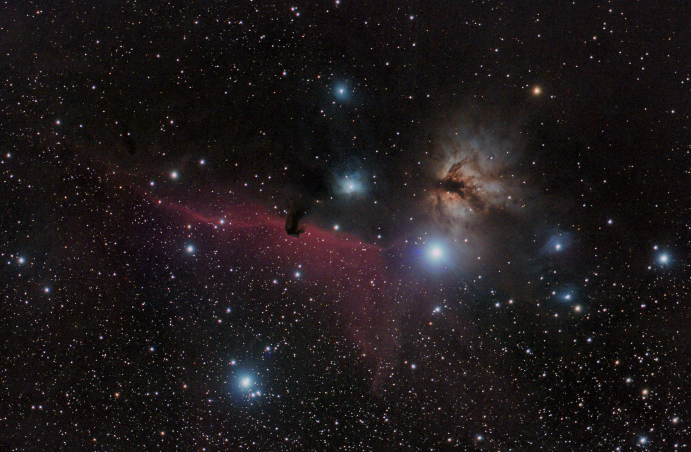
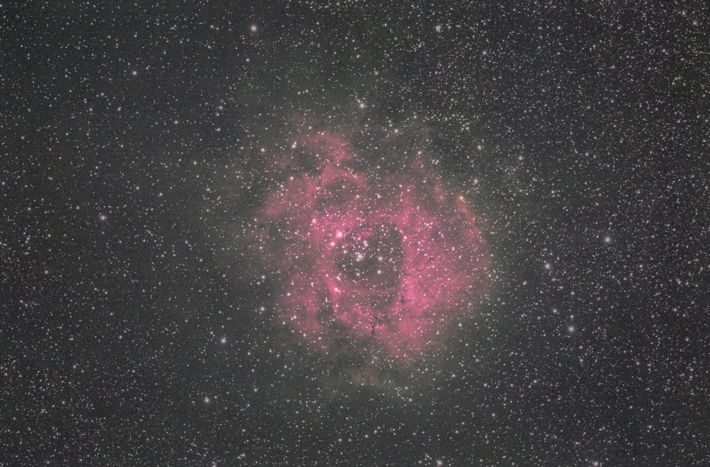
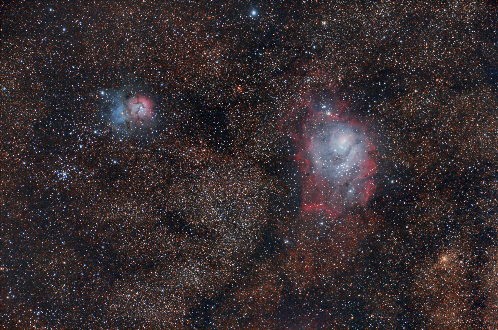

The Intent
I am not trying to replace PixInsight with a mystery one-click filter. The goal is to make the boring and repetitive work more repeatable: archive inventory, target research, calibration planning, script generation, parameter trials, comparison exports, and documentation.
The useful AI role is a second processor at the desk: it can notice patterns, propose branches, write scripts, compare outcomes, and keep notes while I make the final taste and trust calls.
What To Expect
The image page shows selected results. The process gallery shows the more important part: the paths taken, the branches rejected, and the places where the data or the automation pushed back.
Some projects land cleanly as accepted finals. Others remain presentation candidates because the data, gradients, color calibration, or noise do not justify a stronger claim.
Can AI Choose The Knobs?
Increasingly, yes for drafts and parameter search. Not yet, reliably, for an unattended final. A good AI-assisted routine can inspect a stack, choose target-specific settings, run alternatives, and reduce hard-coded stretch, saturation, denoise, and sharpening values. That is already more useful than a rigid script.
But the dependable workflow is still hybrid: deterministic calibration and stacking, scriptable processing branches, AI or plugin help for denoise/deblur/star separation, and human review before calling something final. M81/M82 is a useful warning: better tools did not magically fix noisy data, and some plugin branches made artifacts more obvious.
So the practical answer to the Friday-night question is: AI can get you closer to a good Saturday-morning draft with fewer hand-tuned constants. A trusted final still benefits from review, comparison, and an honest record of what failed.


